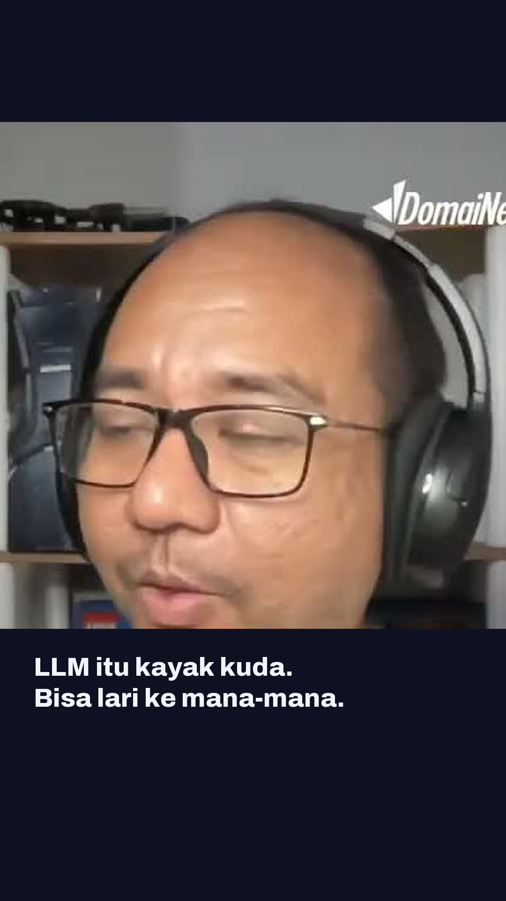
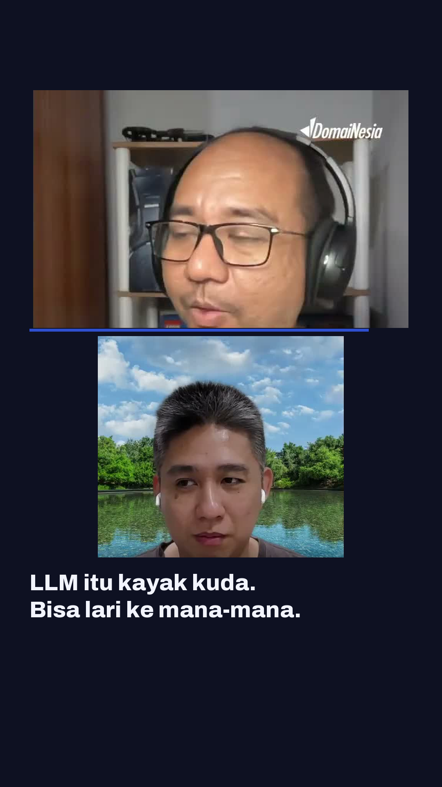
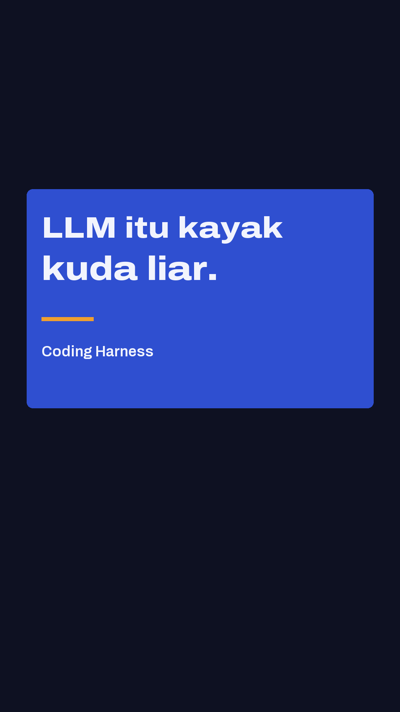

Ngobrolin WEB.
Dua suara, satu obrolan.
Identitas yang tetap dikenali, dengan logo vektor yang bersih dan bentuk percakapan yang bisa bergerak.
Kenal warnanya.
Lebih jelas bentuknya.
Biru membuka percakapan. Oranye menjawab. Wordmark Archivo tetap lebar dan tegas, tanpa ikut membawa seluruh poster podcast.
Simbol dan tulisan bisa dipakai bersama atau terpisah.
Terbaca saat kecil.
Dua balon saling menyahut. Tanpa detail mikrofon, gelombang suara, atau ornamen yang hilang di layar ponsel.
Aset: horizontal · bertumpuk · simbol · satu warna · latar terang dan gelap. SVG memakai outline, bukan teks yang bergantung pada font.
Orangnya di depan.
Bingkainya secukupnya.
Shell mengikuti obrolan: dekat saat menjelaskan, berdua saat saling menanggapi. Branding kecil, caption jelas.
Warna yang sudah dikenal
#0E1122
#2F4FD0
#F0A030
#F2F4FD
Navy menjaga kontras dengan rekaman yang berubah-ubah. Biru untuk bidang identitas. Oranye hanya sebagai penanda singkat.
Satu keluarga: Archivo
yang penting.
Judul: lebar 118%, tebal 800. Caption: lebar normal, tebal 800. Maksimal dua baris, bukan karaoke per kata.
Kalau nggak dikendalikan…
Tiga keadaan, satu sistem.
Studi tata letak memakai cuplikan asli. Caption di bawah ini menunjukkan gaya, bukan timing final atau potongan video baru.

Fokus pembicara
Wajah lebih besar. Judul panjang tidak menetap di atas rekaman.

Saling menanggapi
Dua wajah saat ada pertanyaan, reaksi, atau tawa bersama.

Pembuka singkat
Logo dan hook. Ucapan masuk secepat mungkin, tanpa menunggu bumper panjang.
Ganti layout saat pembicara, reaksi, atau gagasan berubah. Hindari zoom tanpa alasan.
Cut langsung untuk pergantian suara. Reframe singkat bila sumber cukup tajam. Caption tidak ikut melompat.
Cadangkan ruang kanan dan bawah untuk UI platform. Periksa ulang pada aplikasi sebelum tayang.